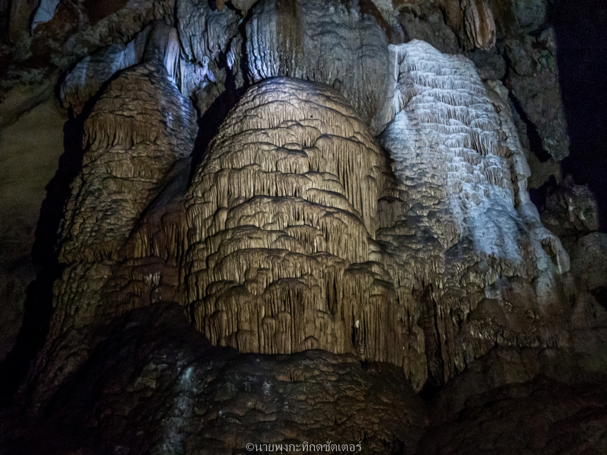

ถ้ำ ปปร.

ถ้ำ ปปร. จารึกพระนามาภิไธย ย่อ ร. 7
.
จากหน้าบันไดสู่โถงถ้ำประดิษฐานพระพุทธไสยาสน์ หรือพระนอน ของวัดคูหาภิมุข หากเลี้ยวขวาไปตามทางเดินแสนร่มรื่น คุณจะพบกับถ้ำเจ้าแม่กวนอิม และทางเข้าถ้ำมืด แหล่งโบราณสถานสำคัญ อันมีหินงอกหินย้อย และขดพญานาคสระแก้วตามที่แอดนำเสนอในโพสต์ก่อนหน้า เส้นทางนี้เป็นอีกเส้นทางเดินที่เราอยากเชิญแวะชม
.
เมื่อเข้าสู่บริเวณถ้ำมืด เมื่อเลี้ยวขวา คุณจะพบกับปากถ้ำอีกแห่ง มีชื่อว่า "ถ้ำ ปปร." นั่นเพราะมีจารึกพระนามาภิไธ ย่อของพระบาทสมเด็จพระปกเกล้าเจ้าอยู่หัว รัชกาลที่ 7 สีทองเด่นอยู่เหนือหัว แน่นอนสถานที่แห่งนี้ในหลวงรัชกาลที่ 7 เคยเสด็จมาทอดพระเนตร แต่ไหงพระนามย่อถึงได้อยู่สูงนัก พระองค์ปีนขึ้นไปจารึกไว้อย่างนั้นหรือ
.
ตามข้อสันนิษฐาน คาดว่าอดีตบริเวณนี้คงมีระดับน้ำสูง และพระองค์ก็ทรงเสด็จมาทางเรือ แล้วจารึกพระนามย่อไว้ ณ จุดที่สวยงามจุดหนึ่งของวัดหน้าถ้ำ จ.ยะลา แห่งนี้
.
ปัจจุบันระดับน้ำลดลงเยอะ และหากคุณได้มายืนใต้จารึกพระนามย่อ ปปร. จะมองแอ่งน้ำก็สวย จะมองเนินผาก็งาม มองทิวเขาก็ประทับใจ ใครชอบถ่ายภาพ รับรองว่าไม่ต่ำกว่าร้อยแอคเป็นมั่น
.
เดิมถ้ำ ปปร. ไม่ได้เดินทอดน่องเข้ามาง่ายดายอย่างปัจจุบัน เพราะทางเข้าเป็นลำคลอง (อดีตยังไม่ถมเป็นทางเท้า) นักท่องเที่ยวต้องใช้เส้นทางตรงถ้ำเจ้าแม่กวนอิมสัญจร ซึ่งทุลักทุเลเป็นอย่างมาก เพราะทั้งมืดและแคบ ถึงขนาดต้องคลานเนื้อตัวมอมแมมกันเลยทีเดียว แต่เมื่อได้มาถึงจุดชมวิวปากถ้ำ ปปร. ก็ถือว่าคุ้มค่า
.
ความงาม ณ ปากถ้ำ ปปร. ไม่เคยจาง แต่การเดินทางง่าย และสะดวกขึ้นอย่างมาก ฉะนั้นหากมาเยือนแล้วคุณจะทิ้งโอกาสเข้าชมเชียวหรือ?
ข้อมูลจาก เพจ : ชุมชนท่องเที่ยวบ้านหน้าถ้ำ
ย้อนกลับ